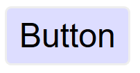
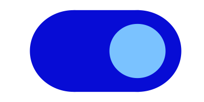
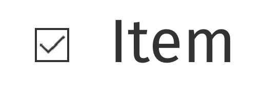
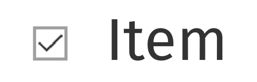
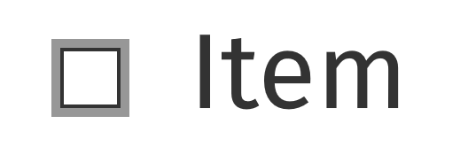
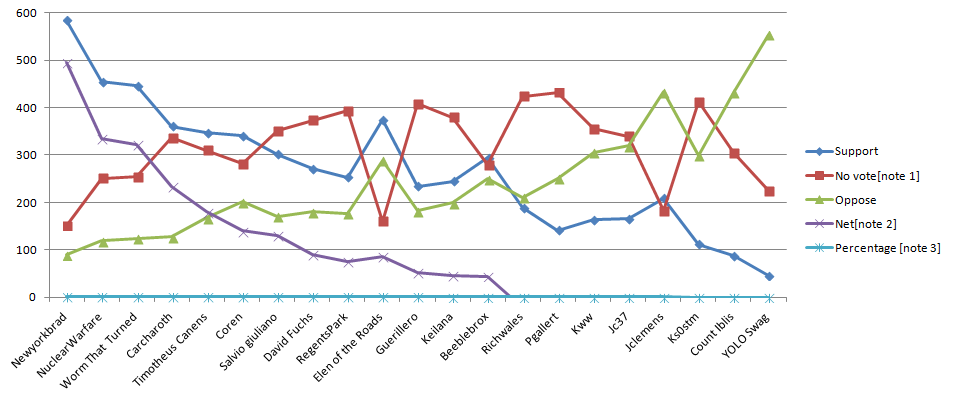

解説書 達成基準 1.4.11:非テキストのコントラスト (レベル AA)
要約
- 目標
- 重要な視覚的情報が、大きな文字に対して求められているのと同じ最低限のコントラストを満たすようにする。
- 何をすればよいか
- 意味を成す視覚的な手がかりが、背景色に対して 3:1 のコントラスト比になるようにする。
- なぜそれが重要か
- コントラストが低い要素を見ることができない人がいる。
意図
この達成基準の意図は、アクティブなユーザインタフェース コンポーネント (つまり、コントロール) 及び意味のあるグラフィックが中程度のロービジョンの人によって識別できるようすることである。この必須要件の根拠は、1.4.3 コントラスト (最低限) の大きな文字のものと同様である。この要件は、非アクティブなユーザインタフェース コンポーネントには適用されないことに注意されたい。
低いコントラストのコントロールは知覚するのが難しく、かつ視覚障害のある人に完全に見逃される可能性がある。同様に、ウェブページのコンテンツ又は機能を理解するためにグラフィックが必要とされる場合、コントラストを強化する支援技術の必要なくロービジョン又は他の障害のある人に知覚されるべきある。
注記
この達成基準で言及されている 3:1 のコントラスト比は、閾値として扱われることを意図している。算出されたコントラスト比を達成基準のコントラスト比と比較する場合、算出された値は丸めるべきではない（例えば、 2.999:1 は 3:1 という閾値を満たさない）。
注記
フォントスムージング及びアンチエイリアシングのユーザー設定をコンテンツ制作者はコントロールできないので、この達成基準を評価するときは、画面に表示される非テキスト要素よりも、ユーザエージェントで取得できる、つまり基礎となるマークアップ及びスタイルシートから得られる、色を参照すること。
アンチエイリアスが原因で、非テキスト要素における特に細い線及び図形は、ユーザエージェントによって、基礎となる CSS で定義された実際の色よりもずっと淡い色で表示されることがある。このため、非テキスト要素のコントラスト比が一応は達成基準を満たしていても、実際にはコントラストがかなり低いという状況が起こり得る。このような場合、ベストプラクティスは、コンテンツ制作者が特に細い線及び図形を避けるか、この達成基準の規範的要件を上回る色の組み合わせを用いることであろう。
ユーザインタフェース コンポーネント
コントロールが非アクティブではない場合、利用者がコントロールが存在すること及び操作方法を識別するために必要な提供されたあらゆる視覚情報は、隣接している色と最低でも 3:1 のコントラスト比がなければならない。また、コンポーネントが選択されている又はフォーカスされているといった状態を示すために必要なあらゆる視覚情報も、その状態のコントロールを識別するために使用された情報が最低でも 3:1 のコントラスト比を持つようにしなければならない。
この達成基準は互いが隣に現れない時、個別のコンポーネントの状態を区別する色の変化が 3:1 のコントラスト比を満たすことを求めない。例えば、訪問済みのリンクとデフォルトの色とのコントラスト、又はマウスホバーインジケータとデフォルトの状態とのコントラストの新しい必須要件はない。しかし、コンポーネントは隣接している色とコントラストを失ってはならず、かつチェックボックス内のチェック、又はメニューが選択されているもしくは開いていることを表す矢印のグラフィックなどの非テキストインジケータは隣接している色に対して十分なコントラストがなければならない。
境界
この達成基準はコントロールにヒット領域を示す視覚的な境界が存在することを求めないが、コントロールの視覚的インジケータがコントロールを識別する唯一の方法である場合、そのインジケータは十分なコントラストがなければならない。ボタン内のテキスト (もしくはアイコン) 又はテキスト入力内のプレースホルダーテキストが可視であり、かつヒット領域の視覚的なしるしがない場合、達成基準に合格する。テキストボタンに色つきのボーダーもある場合、ボーダーはしるしだけを提供しないため、テキストのコントラスト (1.4.3 コントラスト (最低限)) を越えるコントラストの要件はない。認知障害のある人には、コントロールを認識するため、ひいては動作の完了のための支援をするために、コントロールの境界を描くことが推奨されることに注意する。
隣接している色
ユーザインタフェース コンポーネントの「隣接している色」とは、コンポーネントに隣接している色を意味する。例えば、入力に白い内側の背景、濃いボーダー、及び白い外側の背景があった場合、コンポーネントの「隣接している色」は白い外側の背景になる。
コンポーネントが複数の色を使用している場合、コントラスト比を測定する目的で、コンポーネントの識別に干渉しない色は無視できる。例えば、入力の 3D ドロップシャドウ、又はコントラストをもつ背景間の暗いボーダーは、明るさ (知覚される輝度) が最も近い色に含まれていると見なされる。
次の例は、内側に明るい背景があり、周囲に暗い背景がある入力を示している。入力には、暗い背景に含まれていると見なされる暗い灰色のボーダーもある。このボーダーはコンポーネントの識別に干渉しないため、コントラスト比は白の背景と濃い青の背景の間で取得される。
チェックボックスのチェック又はスライダーのつまみなど、状態を特定するために必須の視覚情報には、その部分はコンポーネント内にあるかもしれず、そのため隣接している色はコンポーネントの別の部分かもしれない。
ステータスインジケータがコンポーネントを埋め、かつコンポーネントとコントラストをもたないが、コンポーネントと隣接している色とコントラストをもつようなフラットなデザインを使用することは可能である。

色の使用との関係性
色の使用という達成基準は、オブジェクトの形を一切変えずにオブジェクト又はテキストの色のみ (色相) を変更することを取り上げている。この原則は、コントラスト比 (明るさの差) がテキスト又はグラフィックを区別するために使用できるということである。例えば、G183: 色が単独でリンク又はコントロールを特定する場所で、周囲のテキストと一緒に 3:1 のコントラスト比を使用し、そのリンク又はコントロールのフォーカスに追加の視覚的な手がかりを提供するは周囲のテキストと 3:1 のコントラスト比を使用してリンク及びコントロールを区別する達成方法である。この場合、ワーキンググループは、テキストがリンクであることを伝えるために色 (色相) だけでなくコントラスト比にも依存しているため、リンクではないテキスト色に対して 3:1 のコントラスト比を満たすリンクの色は達成基準 1.4.1 色の使用を満たすと考える。
例えばそれぞれの星が黄色 (満ちている) 又は白 (空いている) のいずれかで埋まった黒いアウトラインをもつ 1-5 のスターインジケータなど、入力の値又は状態を伝えるために色相の違いのみを使用するコントロール内の非テキスト情報は、この基準よりも色の使用の基準に失敗する可能性がある。

フォーカス及び他の状態にコントラストの変化を使用することは状態を区別する方法である。これは G195: コンテンツ制作者が提供する視認性に優れたフォーカスインジケータを使用するの基礎であり、かつより多くの達成方法が追加されている。
フォーカスの可視化との関係性
2.4.7 フォーカスの可視化と組み合わせて、コンポーネントがフォーカスされている時に、そのコンポーネントの視覚的なフォーカスインジケータは、隣接している背景に対して十分なコントラストがなければならない。ただし、コンポーネントの見た目がユーザエージェントにより決定されており、かつコンテンツ制作者により変更されていない場合を除く。
ほとんどのフォーカスインジケータはコンポーネントの外側に表示される。その場合、コンポーネントの背景とコントラストをつける必要がある。その他のケースとしては、以下のようなフォーカスインジケータがある:
- コンポーネントの内側のみにあって、コンポーネント内における隣接色とコントラストをつける必要がある。
- コンポーネントのボーダーにあって (コンポーネントの内側にあって、外側に隣接している)、隣接する両方の色とコントラストをつける必要がある。
- 一部は内部、一部は外部にあって、フォーカスインジケータのいずれかの部分が隣接する色とコントラストをつけることができる。
上の図のようにアウトラインが濃いものは、非テキストのコントラストの達成基準を満たすものの、よほど太いものでない限り、よいインジケータではない。 WCAG 2.2 での追記：WCAG 2.2 には、この側面に対応する達成基準として、フォーカスの外観がある。
インジケータの一部がコンポーネントの内側にあり、一部が外側にある場合は、インジケータのどちらかの部分にコントラストがついている可能性がある。
フォーカスインジケータが、コンポーネントの目に見える境界にあるボーダーを変更する場合、コンポーネントとの間でコントラストがついていなければならない。通常、アウトラインはコンポーネントの目に見える境界の周り (外側) を一回りするが、この場合、ボーダーを変更するのはコンポーネントの目に見える辺のすぐ内側である。
この達成基準は、コントロールのフォーカスされた状態とフォーカスされていない状態を直接比較しないことに注意すること。フォーカス状態が色の変化 (例: ボタンの背景色のみを変更する) に依存している場合、この達成基準は、二つの状態間のコントラストの違いに関する要件を定義していない。
ユーザインタフェース コンポーネントの例
はっきりと知覚される必要のあるフォーカスインジケータ、選択インジケータ、及びユーザインタフェース コンポーネントをデザインするため、次の例には十分なコントラストがある。
| タイプ | 説明 | 事例 |
|---|---|---|
| リンクテキスト | デフォルトのリンクテキストは 1.4.3 コントラスト (最低限) のスコープに含まれ、かつ下線はリンクを示すのに十分である。 |  |
| デフォルトのフォーカススタイル | リンクには可視のフォーカスインジケータが存在することが 2.4.7 フォーカスの可視化により求められている。ウェブサイト (コンテンツ制作者) によって、ユーザエージェントのフォーカススタイルが、インタラクティブなコントロール (リンク、フォームフィールド、又はボタンなどの) において変更されていない場合、デフォルトのフォーカススタイルはコントラスト要件から除外される (ただし、可視でなければならない)。 | |
| ボタン | 位置、テキストスタイル、コンテキストなどの識別インジケータがあるボタンは、ボタンであることを示すためにコントラストをもつ視覚インジケーターを必要としないが、一部の利用者は、コントラスト要件をより簡単に満たすアウトラインでボタンを識別する可能性がある。 |  |
| テキスト入力 (最小限) | テキスト入力に、下部のボーダー (#767676) など、入力であることを示す視覚的なインジケータがあるところでは、そのインジケータは 3:1 のコントラスト比を満たさなければならない。 |

|
| テキスト入力 | 完全なボーダー (#767676) など、テキスト入力がインジケータを持つところでは、そのインジケータは 3:1 のコントラスト比を満たさなければならない。 | |
| テキスト入力のフォーカススタイル | フォーカスインジケータは必須である。この場合、追加の灰色 (#CCC) のアウトラインは白色 (#FFF) の背景に対して 1.6:1 の不十分なコントラストであるが、入力がフォーカスを受け取ったときに表示されるカーソル/キャレットは、十分に強い視覚的表示を提供する。 | |
| 背景色を使用しているテキスト入力 | ボーダーがなく、かつ背景色のみで区別されるテキスト入力は隣接している背景 (#043464) に対して 3:1 のコントラスト比を持たなければならない。 |

|
| トグルボタン | トグルボタンの内部の背景 (#070CD5) は、外部の白色の背景とのコントラストが良好である。また、その中の丸いトグル (#7AC2FF) は、内部の背景とコントラストをもつ。 |  |
| ドロップダウンインジケータ | 下矢印は、ドロップダウン機能があることを理解するために必要である。濃い灰色 (#6E747B) にある白いアイコンのコントラストは 4.7:1 である。 | |
| ドロップダウンインジケータ | 下矢印は、ドロップダウン機能があることを理解するために必要である。白に対する黒いアイコンのコントラストは 21:1 である。 | |
| チェックボックス - 空 | 白色の背景上の黒いボーダーはチェックボックスを示す。 | |
| チェックボックス - チェックされた | 白色の背景上の黒色のボーダーはチェックボックスを示し、黒色のチェックマークの形はチェックされた状態を示す。 |  |
| チェックボックス - 失敗 | チェックボックスの灰色のボーダーの色 (#9D9D9D) は、白色の背景の 2.7:1 のコントラスト比であり、これはチェックボックスを識別するために必要な視覚情報には不十分である。 |  |
| チェックボックス - かすかなホバースタイル | 白色の背景上の黒色のボーダーはチェックボックスを示し、マウスポインタがかすかなホバー状態をアクティブにすると、灰色の背景 (#DEDEDE) が追加される。黒色のボーダーは、灰色の背景と 15:1 のコントラスト比を持つ。 | |
| チェックボックス - かすかなフォーカススタイル - 失敗 | フォーカスインジケータが必要である。フォーカスインジケータがコンテンツ制作者によってスタイル設定されている場合、隣接する色との 3:1 のコントラスト比を満たさなければならない。この場合、灰色 (#AAA) インジケータのコントラスト比は隣接する白色 (#FFF) の背景に対して 2.3:1 と不十分である。 |  |
アクティブではないユーザインタフェース コンポーネント
利用者とのインタラクションに利用できないユーザインタフェース コンポーネント (例: HTML で無効化されたコントロール) はコントラストの要件を満たすことを求められていない。アクティブではないユーザインタフェース コンポーネントは可視だが、現在は操作可能ではない。例としては、可視だが、フォームのすべての必須のフィールドに記入されるまで有効化できないフォームの下部にある送信ボタンがある。

HTML の無効化されたコントロールなどのアクティブではないコンポーネントは利用者とのインタラクションに利用できない。アクティブではないコントロールをコントラストの要件から免除するという判断は、多数の考察に基づく。アクティブでないコントロールを識別することは一部の人にとって有益であるが、汎用的な解決策を制定することは非常に困難だった。無効化されたコントロールにアイコンを追加するなど、利用者の設定に応じて無効化されたコントロールを様々に提示する方法が将来の発展として期待されている。
グラフィカルオブジェクト
「グラフィカルオブジェクト」という用語は、(テキストのない) 印刷アイコンなどの独立したアイコン及びグラフの各線などのより複雑な図の重要な部分に適用される。単一色のアイコンなどの単純なグラフィックの場合、画像全体がグラフィカルオブジェクトになる。複数の線、色、及び形で形成された画像は複数のグラフィカルオブジェクトで形成されており、それらのいくつかは理解するのに必要である。
すべてのグラフィカルオブジェクトが周囲とのコントラストをもつことが必要なわけではない - グラフィックが伝えていることを利用者が理解するのに必要なもののみである。Gestalt principles の「連続性の法則」などは他のグラフィカルオブジェクト又は色の軽微な重なりを無視するために使用できる。
| 画像 | 注記 |
|---|---|
|
電話のアイコンはオレンジ (#E3660E) の円の中にある単純な形である。この意味はアイコン単体から理解でき、円の後ろにある背景は重要ではない。オレンジの背景及び白いアイコンは 3:1 以上のコントラストがあり、合格する。 グラフィカルオブジェクトは白い電話のアイコンである。 |
|
 |
マグネットは薄く色づけられた先端と「U」という形により理解できる。そのため、このグラフィックを理解するには、(背景に対して) 全体の形及び (その他の U の形及び背景に対して) 薄く色づけられた先端を理解できるべきである。 グラフィカルオブジェクトは (アウトラインによる、又はベタ塗りの赤色 #D0021B による) 「U」という形及びマグネットの各先端である。 |
|
通貨 (£) が下がっていることを示す記号は、外形 (下向き矢印) 及び通貨記号 (グラフィックの一部である外形とポンドアイコン) を識別することにより理解することができる。このグラフィックを理解するには、白い背景に対して矢印の形、及び黄色い背景 (#F5A623) に対してポンドアイコンを理解する必要がある。 グラフィカルオブジェクトは外形及び通貨記号である。 |
|
|  |
グラフを理解するためには、各条件の線及び外形を理解する必要がある。チャートに沿った各線の値を認識するには、目盛りの 100 きざみの値を示す灰色の線を識別する必要がある。 グラフィカルオブジェクトは値のための背景の線を含むグラフ内の線、及び形と色つきの線である。 線には背景に対して 3:1 のコントラストがあるべきだが、それらの他の線との重なりは小さいため、それぞれ又は目盛り付きの線とコントラストをもたなくても良い。(以下の検証の原則を確認すること。) |
|
円グラフを理解するためには、円グラフの各扇形を他と区別する必要がある。 グラフィカルオブジェクトは円 (グラフ) の各扇形である。 注記: もし円グラフの扇形の値が適合する方法で提示されていた場合 (詳細は円グラフの例を参照)、扇形は理解するのに必要ではない。 |
{kind=link}
{kind=link}
上記のマグネット画像を例にとると、グラフィカルオブジェクトを定める過程は:
- 画像が何を表しているかを理解するために、各画像のどの部分が必要かを評価する。 マグネットの「U」という形はアウトライン又は赤い背景で伝えることができる (どちらも条件を満たしている)。白い先端も重要であり (そうでなければ馬蹄になってしまう)、赤い背景とコントラストをもつ必要がある。
- 利用者がそれらの特徴しか見られないと仮定する。それらは隣接している色とコントラストをもつか？
マグネットのアウトラインは周囲のテキスト (黒／白) とコントラストをもち、かつ先端の赤及び白も十分なコントラストがある。
赤と白の強いコントラストにより、マグネットの白い先端の周りのみにアウトラインをつけることも可能であり、それでも適合する。
理解するのに必要
「理解するのに必要」という用語は、多くのグラフィックがコントラストの要件を満たさなくて良いため、達成基準の中で使用されている。もし人がコンテンツを理解するためにグラフィック、又はグラフィックの一部 (グラフィカルオブジェクト) を知覚する必要がある場合、それは十分なコントラストを持つべきである。しかし、これは次の場合は必須要件ではない:
-
ラベル及びチャート内の値など、グラフィックに埋め込まれた又は重ねられたテキストが同じ情報を伝えている。
注記
グラフィック内のテキストは 1.4.3 コントラスト (最低限) を満たさなければならない。
- グラフィックが見栄えのためにあり、利用者にコンテンツを理解するため又は機能を使用するために見る又は理解することを求めない。
- 「長い説明」ボタンを押下すると表示されるグラフに続く表など、情報が他の形式で提供されている。
- グラフィックはロゴ又はブランド名の一部である (その提示にとって「必要不可欠」と考えらえている)。
グラデーション
グラデーションは領域間の見かけのコントラストを減らすことができ、かつ検証をより困難にする。一般的な原則としては、理解するのに必要なグラフィカルオブジェクトを特定し、その領域の中央の色をとることである。もし十分なコントラストのない隣接している色を取り除いても、まだグラフィカルオブジェクトを特定しかつ理解することができるのか？
動的な例
グラフィックの中には、コントラストを変更したり、各グラフィカルオブジェクトにマウスオーバー／タップ／フォーカスをしたときに情報をテキストとして表示するインタラクションがあるかもしれない。結局のところ人がグラフィックの存在を認識するには、フォーカスされていないデフォルトのバージョンにおいて、あらかじめ十分なコントラストの色又はテキストがなければならない。フォーカスを受け取る領域においては、情報をポップアップテキストとして動的に提供したり、コントラストを高めることで動的に目立たせたりすることができる。
インフォグラフィック
インフォグラフィックはチャート又は図など、データを伝えるあらゆるグラフィックを意味することができる。ウェブではよくたくさんの意見、絵、チャート、又は他のデータを伝える方法を含む大きなグラフィックを示すために使われている。グラフィックのコントラストの文脈では、そのようなインフォグラフィック内の各アイテムは、一つのファイルか個別のファイルかにかかわらず、一連のグラフィカルオブジェクトとして扱われるべきである。
インフォグラフィックはよく、以下を含む WCAG レベル AA の基準を満たすことに失敗する:
インフォグラフィックは、理解するのに必要なグラフィカルオブジェクトの数を最小限にするために、他の基準を満たすテキストを使用することができる。例えば、チャート内の値を提供するために、十分なコントラストのテキストを使用する。インフォグラフィックが理解のために依存されなくなるため、長い説明でも十分だろう。
記号文字
テキスト文字が記号として使用される場合 — つまり自然言語で何かを表現する
のではなく、その視覚的な外観のために使用される場合 — それらは非テキストコンテンツの定義に該当する。
必要不可欠な例外
グラフィカルオブジェクトは、「グラフィック特有の提示が、情報を伝えるうえで必要不可欠」な場合、コントラストの要件を満たす必要はない。必要不可欠の例外は、意味を損なわずに十分なコントラストのグラフィックを提示する方法がない場合に適用することを意図している。例えば:
- ロゴタイプ及び旗: 組織又は製品のブランドのロゴはその組織の象徴であるため、免除する。旗は、十分なコントラストを持つために色が変更された場合、識別できないかもしれない。
- 感覚的: 人又は風景の写真などの現実の場面の絵を変更するという必須要件はない。
- 他のものを表している: : グラフィックを他のどの方法でも表現できない場合、それは必要不可欠である。例に含まれるのは:
- ウェブサイトがどのように表示されていたかを明示するスクリーンショット。
- 生物学で見られる色を使用した医療情報の図 (Wikipedia の医療的な図解の例)。
- ヒートマップなどの、測定結果を表す色のグラデーション (Wikipedia からのヒートマップの例)。
{kind=link}
{kind=link}
検証の原則
ウェブページの非テキストグラフィックを見つける及び評価するための上層工程の概要:
- ページ内の各ユーザインタフェースコンポーネント (リンク、ボタン、フォームコントロール) を特定する。及び:
- コントロールが存在することを特定するために必要とされているコンポーネントの視覚的な (非テキストの) 目安を特定し、かつ現在の状態を示す。規定 (ページロード時) の状態では、隣接している色に対してコントラスト比を検証する。
- それらのコントラストの目安を各状態で検証する。
- ページ内のコンテンツを理解するのに必要な情報を含む各グラフィックを特定する (つまり、同じ情報の可視テキストを含む、又は装飾的なグラフィックは除外する)。及び:
- 隣接している色に対してグラフィカルオブジェクトのコントラストを確認する。
- もし複数の色及び／又はグラデーションがある場合、最もコントラストが低い箇所を選択して検証する。
- 合格の場合、次のグラフィカルオブジェクトに移動する。
- もし最もコントラストが低い領域が 3:1 を下回る場合、その領域が非可視であると仮定して、グラフィカルオブジェクトはそれでも理解できるか？
- グラフィカルオブジェクトを理解するのに十分な場合、合格する。そうでなければ、失敗する。
以下の達成方法はそれぞれ検証基準があり、かつフォーカスの可視化 (2.4.7)、色の使用 (1.4.1)、及びコントラスト (最低限) の関連する基準にも達成方法がある。
利点
ロービジョンの人は不十分なコントラストのグラフィックを知覚するのが困難なことがよくある。これは、コントラストをさらに低下させる色覚異常がある人の場合、深刻となりえる。3:1 又はそれ以上の相対輝度 (明るさの違い) を提供することで、その人があらゆる色を見ることができなくても、これらの項目をさらに識別しやすくする。
事例
- アプリケーションのダッシュボードにある (関連しているテキストのない) ステータスアイコンには 3:1 の最低限のコントラスト比がある。
- テキスト入力には白い編集可能領域の周りに濃いボーダーがある。
- グラフは薄い背景を使用し、各線の色が背景に対して 3:1 のコントラスト比を持つようにしている。
円グラフ
円グラフはこの達成基準のグラフィカルオブジェクトに関する部分の良いケーススタディになる。次の円グラフは、ブラウザの市場シェアの割合を伝えることを意図している。実際の数字は作られたものであり、これらは実際の市場シェアではないことに注意いただきたい。
失敗: 円グラフには各扇形にラベルがついている (そのため、1.4.1 色の使用は合格する) が、扇形の割合を理解するためには、その扇形の縁 (必要不可欠な情報を伝えるグラフィカルオブジェクト) を認識しなければならず、かつ各扇形間のコントラストは 3:1 又はそれ以上ではない。
非適用: 円グラフには可視ラベル及び値があり、グラフィカルオブジェクト (円の扇形) の同等の情報を伝えている。
合格: 円グラフには可視ラベルがあり、かつ十分なコントラストが円グラフの扇形 (グラフィカルオブジェクト) の周囲及び間にある。コントラストレベルを得るために、さらに濃いボーダーが黄色い扇形の周りに追加されている。
インフォグラフィック
失敗: ネットワークのサイズを理解するために円を識別する必要があり、かつどのネットワークを表しているかを識別するために各円の中のアイコンを区別する必要がある。
グラフィカルオブジェクトは (背景に対して測定される) 円及び (円の背景に対して測定される) 各円の中のアイコンである。
合格: 円にはコントラストをもつボーダーがあり、かつアイコンは薄い円の背景に対してコントラストをもつ濃い色である。
コントラストを確保するためのたくさんの可能な解決策があり、例ではボーダーの使用を表している。他の達成方法には、円の背景により濃い色を使用する、又は各項目にテキストラベル及び値を追加することがある。
関連リソース
リソースは、情報提供のみを目的としており、推奨を意味するものではない。
- Accessibility Requirements for People with Low Vision.
- Smith Kettlewell Eye Research Institute - "If the text is better understood with the graphics, they should be equally visible as the text".
- Gordon Legge - "Contrast requirements for form controls should be equivalent to contrast requirements for text".
テクニック
この節にある番号付きの各項目は、WCAG ワーキンググループがこの達成基準を満たすのに十分であると判断するテクニック、又は複数のテクニックの組み合わせを表している。しかしながら、必ずしもこれらのテクニックを用いる必要はない。その他のテクニックについての詳細は、WCAG 達成基準のテクニックを理解するの「その他のテクニック」を参照のこと。
十分なテクニック
そのコンテンツに合致する状況を以下から選択すること。それぞれの状況には、WCAG ワーキンググループがその状況において十分であると判断する、番号付のテクニック (又は、テクニックの組み合わせ) がある。
状況 A: 色は、ユーザインタフェース コンポーネントを識別するために使用される、又はユーザインタフェース コンポーネントの状態を識別するために使用される
状況 B: 色はグラフィカルコンテンツを理解するために必須である
失敗例
以下に挙げるものは、WCAG ワーキンググループが達成基準の失敗例とみなした、よくある間違いである。
重要な用語
文字又はグリフの空間的配置によって作られた図画 (典型的には、ASCII で定義されている 95 の印字可能文字から作られる)。
障害のある利用者の要件を満たすために、主流のユーザエージェントが提供する機能を超えた機能を提供するような、ユーザエージェントとして動作する、又は主流のユーザエージェントと共に動作するハードウェア及び／又はソフトウェア。
注記
支援技術が提供する機能としては、代替の提示 (例: 合成音声や拡大表示したコンテンツ)、代替入力手法 (例: 音声認識)、付加的なナビゲーション又は位置確認のメカニズム、及びコンテンツ変換 (例: テーブルをよりアクセシブルにするもの) などを挙げることができる。
注記
支援技術は、API を利用、監視することで、主流のユーザエージェントとデータやメッセージのやりとりをすることが多い。
注記
主流のユーザエージェントと支援技術との区別は、絶対的なものではない。多くの主流のユーザエージェントは、障害のある個人を支援する機能を提供している。基本的な差異は、主流のユーザエージェントが障害のある人もない人も含めて、広く多様な利用者を対象にしているのに対し、支援技術は、特定の障害のある利用者という、より狭く限られた人たちを対象にしているということである。支援技術により提供される支援は、対象とする利用者に特化した、よりニーズに適したものである。主流のユーザエージェントは、プログラムオブジェクトからのウェブコンテンツの抽出、マークアップの識別可能な構造への解釈といった、重要な機能を支援技術に対して提供する場合がある。
コンテンツの構造、提示、及びインタラクションを定義するコード又はマークアップも含めて、ユーザエージェントによって利用者に伝達される情報及び感覚的な体験。
(L1 + 0.05) / (L2 + 0.05) ここでは、
注記
コントラスト比は、1～21 の範囲になりうる (通常は、1:1～21:1 と記述される)。
注記
コンテンツ制作者は、テキストのレンダリング (例: フォントのスムージングやアンチエイリアス) に関する利用者の設定を制御できないため、アンチエイリアスをオフにした状態でテキストのコントラスト比を評価してもよい。
注記
達成基準 1.4.3 及び 1.4.6 の目的上、コントラストは通常の使用においてテキストがレンダリングされるときに指定されている背景色に対して測定する。もし背景色の指定がない場合は、背景色には白を想定する。
注記
背景色は、テキストが通常の使用においてレンダリングされるときに背景となるコンテンツの色として指定された色である。テキストの色は指定されているが背景色が指定されていない場合、利用者のデフォルトの背景色は未知であり、コントラストが十分かどうかを評価することができないため、失敗例となる。同じ理由で、背景色が指定されているがテキストの色が指定されていない場合も失敗例となる。
注記
文字の周囲に縁取りがある場合、その縁取りがコントラストを強めることもあり、文字とその背景色におけるコントラストの計算に用いられる。文字の周囲の細い縁取りは文字として扱われる。文字の周囲の太い縁取りが、光彩のようになって、文字の内側の細部を塗りつぶしていれば、背景色として考慮されることになる。
注記
WCAG に適合しているか判断する場合は、典型的な提示において隣接するであろうと制作者が想定するコンテンツで指定された色の組み合わせについて評価しなければならない。制作者は、ユーザエージェントによる色の変更などのように通常とは異なる提示を考慮する必要はない。ただし、それが制作者のコードによって起こる場合は除く。
もし取り除いてしまうと、コンテンツの情報又は機能を根本的に変えてしまい、かつ、適合する他の方法では情報及び機能を実現できない。
人間とコミュニケーションをとるために話される、書かれる、又は (視覚的もしくは触覚的な手段で) 手話にされる言語。
注記
手話も参照。
プログラムによる解釈が可能な文字の並びではないコンテンツ、又は文字の並びが自然言語においても何をも表現していないコンテンツ。
注記
これには、 (文字による図画である) ASCII アート、顔文字、 (文字を置き換える) リートスピーク、文字を表現している画像が含まれる。
利用者が知覚できる形式でコンテンツをレンダリングすること。
支援技術を含む様々なユーザエージェントが抽出でき、利用者に様々な感覚モダリティで提示できるような形のデータがコンテンツ制作者によって提供されたとき、そのデータがソフトウェアによって解釈されること。
最も暗い黒を 0 に、最も明るい白を 1 に正規化した色空間内の任意の点の相対的な明るさ。
注記
sRGB 色空間においては、色の相対輝度は、L = 0.2126 * R + 0.7152 * G + 0.0722 * B と定義されており、R、G 及び B は以下のように定義される:
- RsRGB <= 0.04045 の場合 R = RsRGB/12.92、そうでない場合 R = ((RsRGB+0.055)/1.055) ^ 2.4
- GsRGB <= 0.04045 の場合 G = GsRGB/12.92、そうでない場合 G = ((GsRGB+0.055)/1.055) ^ 2.4
- BsRGB <= 0.04045 の場合 B = BsRGB/12.92、そうでない場合 B = ((BsRGB+0.055)/1.055) ^ 2.4
そして、RsRGB、GsRGB、及び BsRGB は、次のように定義される:
- RsRGB = R8bit/255
- GsRGB = G8bit/255
- BsRGB = B8bit/255
^ という記号は、指数演算子である (計算式は、[SRGB] を参考にしている)。
注記
021 年 5 月以前は、定義にある 0.04045 の値が異なっていた (0.03928)。これは、古いバージョンの仕様から取り込んだものであり、現在は更新されている。本ガイドラインの文脈における計算には、実質的な影響はない。
注記
ウェブコンテンツを閲覧するのに今日用いられているほとんどすべてのシステムは、sRGB 符号化を前提としている。コンテンツを処理して表示するのに別の色空間が用いられている事が分かっているのでない限り、コンテンツ制作者は sRGB 色空間を用いて検証するべきである。もしその他の色空間を用いるのであれば、達成基準 1.4.3 を理解するを参照。
注記
表示時にディザリングが発生する場合は、元の色の値が用いられる。元々ディザリングがかけられている色については、用いられている色の平均値を用いるべきである (R の平均値、G の平均値、及び B の平均値)。
注記
コントラストと閃光を検証する際に、この計算を自動で行うツールが利用できる。
注記
MathML を用いて相対輝度の定義を与える別のページでもこの計算式を表示できる。
意味を伝えるために、手と腕の動き、顔の表情又は身体の姿勢の組み合わせを用いる言語。
利用者のアクション又は自動プロセスに応答して変化し得るユーザインタフェースコンポーネントの特性を表現する動的プロパティ。
状態はコンポーネントの本質に影響を与えないが、コンポーネント又はインタラクションの変化の候補に関連付けられているデータを表す。例えば、フォーカス、ホバー、選択、プレス、チェック、訪問済・未訪問、展開・折りたたみが挙げられる。
ウェブコンテンツを取得して利用者に提示するあらゆるソフトウェア。
コンテンツの一部分で、特定の機能を実現するための単一のコントロールとして利用者が知覚するもの。
注記
複数のユーザインタフェース コンポーネントが、単一のプログラム要素で実装されることもある。ここでいう「コンポーネント」は、プログラムの手法と結びついたものではなく、利用者が別々のコントロールとして知覚するものを指す。
注記
ユーザインタフェース コンポーネントには、フォーム要素、リンクだけでなく、スクリプトで生成されるコンポーネントが含まれる。
注記
ここでの「コンポーネント」又は「ユーザインタフェース コンポーネント」は、「ユーザインタフェース要素」とも呼ばれる。
単一の URI から HTTP で得た埋め込まれていないリソースに加え、レンダリングに使われる、又はユーザエージェントがこのリソースと一緒にレンダリングすることを意図しているその他のあらゆるリソースを合わせたもの。
注記
どのような「その他のリソース」も主たるリソースと一緒にレンダリングされるであろうが、これらのリソースが同時にレンダリングされるとは限らない。
注記
このガイドラインの適合範囲に含まれる対象となるウェブページとみなされるためには、リソースが「埋め込まれていない」リソースでなければならない。